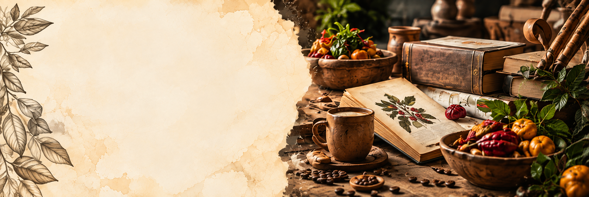

NUESTRA PRODUCCIÓN
PUBLICACIONES
Producción bibliográfica que preserva, analiza y divulga el patrimonio gastronómico colombiano.
Explora nuestras publicaciones →CONOCIMIENTO QUE SE COMPARTE
Conocimiento que
se publica y se comparte
Nuestras publicaciones reúnen los resultados de investigación del grupo en libros, capítulos de libro y artículos científicos, aportando al reconocimiento, conservación y difusión del patrimonio gastronómico colombiano.
LIBROS RESULTADO DE INVESTIGACIÓN
ARTÍCULOS DESTACADOS
CAPÍTULOS DE LIBRO